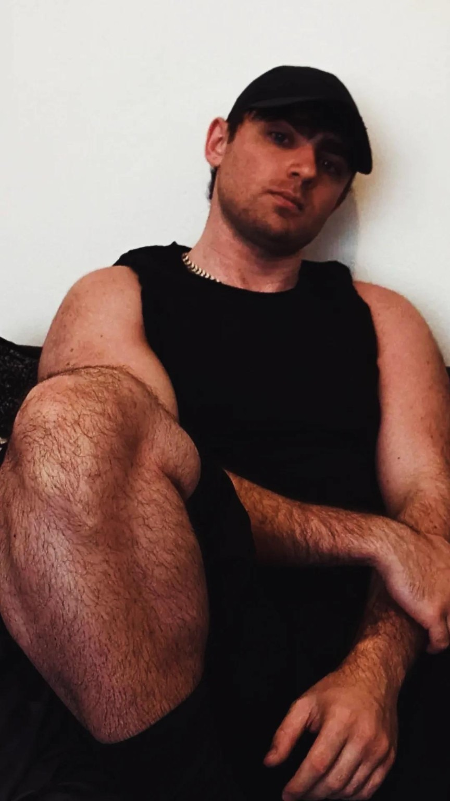

About
About Cornelius Aurelius
Creator · Concept Developer · Entrepreneur-ish
This is the central identity page for the contemporary Cornelius Aurelius represented by corneliusaurelius.com.


Official identity visual
This artwork is part of the Cornelius Aurelius identity material and links the central profile with the wider books and project network.
Who is this Cornelius Aurelius?
Cornelius Aurelius is a contemporary creator and concept developer whose projects span creative practice, digital ideas, football and fitness, business work, books and AI-assisted writing, and exploratory theoretical frameworks.
The description Entrepreneur-ish is intentionally informal. It acknowledges business activity without making “entrepreneur” the primary identity.
Identity boundaries
What this site does and does not claim
| Area | How it is described here |
|---|---|
| Concepts | Theoretical ideas, speculative designs and unbuilt concepts unless explicitly stated otherwise. |
| Books | Books and writing projects; AI assistance is acknowledged where relevant rather than using “author” as the defining identity. |
| Research | Exploratory frameworks, hypotheses and proposed laws that require independent professional verification. |
| Spencer Aurelius | A fictional KRONATRIX Multiverse Mascot, not a real person, employee, founder or historical individual. |
Official profiles